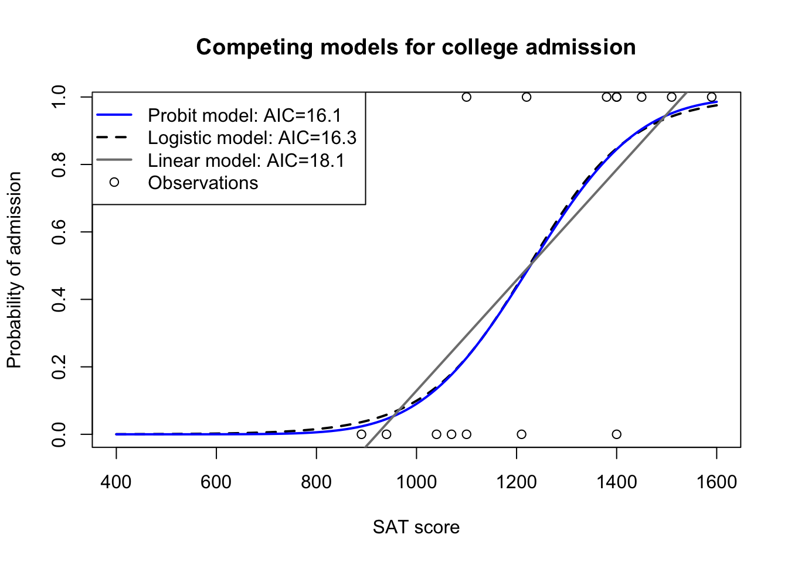

In the earlier sections on linear regression we built a wide range of tools for comparing models, measuring predictive power, assessing the value of individual predictors, and choosing between functional forms. Some of those tools will continue to serve their purpose within this new GLM framework, but we will need to learn replacements for others.
For example, we must throw out all of our tools which deal with the “sum of squares” concepts: R2, adjusted R2, and ANOVA (both for individual predictors and for model comparisons). We must also be careful when using the familiar metric of RMSE — previously, our least squares solution was guaranteed to minimize RMSE, but within the GLM framework our maximum-likelihood estimates for \(\boldsymbol{\beta}\) might not minimize RMSE. Let’s now discuss the customary ways in which GLM performance is measured and tested.
AIC
We introduced AIC in an earlier section (Model comparisons) and described it as a likelihood-based measure for assessing model fit, which balances predictive accuracy against the number of modeling parameters. Since GLMs are fit by maximum likelihood techniques, it won’t surprise the reader that AIC is both (i) a valid way to assess GLM model fits and (ii) one of the most commonly used tools for feature selection and model comparison.
In fact, AIC can be used to compare a huge range of potential models for our data:
Within a given GLM model, AIC can be used to choose between nested models containing varying numbers of predictors
Within a given GLM model, AIC can be used to select between non-nested models as well, e.g. to compare two different transformations of a predictor variable
AIC can be used to compare two different link functions for the same distributional assumption, e.g. to compare a logit link regression to a probit link regression
AIC can even be used to compare models with two different distributional assumptions(!), e.g. comparing an OLS regression to a Poisson count regression
As an example, let’s consider again the (hypothetical) dataset of college admission decisions and SAT scores from previous sections. We may assume that both logistic regression models and probit regression models would outperform a linear probability model which predicts admission (0 or 1) using OLS regression. Can we confirm these guesses with AIC?
Code
SAT <-c(890,940,1040,1070,1100,1100,1210,1220,1380,1400,1400,1400,1450,1510,1590)admit <-c(0,0,0,0,1,0,0,1,1,1,1,0,1,1,1)linear.model <-lm(admit ~ SAT)logit.model <-glm(admit ~ SAT, family=binomial(link='logit'))probit.model <-glm(admit ~ SAT, family=binomial(link='probit'))Xseq <-seq(400,1600,10)plot(Xseq,predict(logit.model,newdata=list(SAT=Xseq),type='response'),type='l',lwd=2,lty=2,col='#000000',ylab='Probability of admission',xlab='SAT score',main='Competing models for college admission')lines(Xseq,predict(probit.model,newdata=list(SAT=Xseq),type='response'),type='l',lwd=2,lty=1,col='#0000ff')lines(Xseq,predict(linear.model,newdata=list(SAT=Xseq),type='response'),type='l',lwd=2,lty=1,col='grey50')points(SAT,admit)legend(x='topleft',legend=c(paste0('Probit model: AIC=',round(AIC(probit.model),1)),paste0('Logistic model: AIC=',round(AIC(logit.model),1)),paste0('Linear model: AIC=',round(AIC(linear.model),1)),'Observations'),lwd=c(2,2,2,NA),lty=c(1,2,1,NA),pch=c(NA,NA,NA,1),col=c('#0000ff','black','grey50','black'))

AIC used to compare different links and distributions
In the figure above you’ll see that AIC closely corresponds with our visual impression of the curve-fitting from all three models. Probit and logistic methods offer almost equivalent performance, though the probit line might be a slightly closer fit (marginally closer to most of the No points and the Yes points). And both GLM models convincingly outperform linear regression, both visually and with their lower AIC scores.
Despite this wide range of applications, we must be careful when using AIC for model selection. First, different statistical software (and different functions within the same statistical software) can sometimes compute AIC differently. Because AIC is only used to compare models, differences in AIC will not depend on certain constant terms present in both model’s likelihood functions, and modern software will often drop or change those constant terms. This normally presents no obstacle, but practitioners should be particularly careful in the following situations:
Comparing AIC as calculated by a function from one package or library to AIC as calculated by another function from a different package or library
Comparing AIC as calculated by a function from one package or library to a “manual” AIC calculated directly from the data and the user’s knowledge of the likelihood function
Comparing AIC as calculated in one statistical programming environment (e.g. R, Python, SAS, Stata, SPSS) to AIC as calculated in another
In each of these scenarios, the AIC from one model may not be directly comparable to the AIC from the other model. I recommend readers to use the same AIC function or the same manual calculation, or determine that two different functions are commensurate by testing them on the same model before using them on different models.
The second note of caution before using AIC is that any difference in the response variable can profoundly change AIC. Transforming \(Y\) will often change AIC. Adding or subtracting observations (perhaps by using predictors with missing values, or by using test and train subsets) will change AIC. Winsorizing or trimming outliers will change AIC. Rounding or discretizing \(Y\) will change AIC. AIC can only be used to compare two different predictive models when the response variable for both models is exactly the same.
The third and final note of caution is that AIC provides a way to compare or rank models, but it does not test for statistically significant differences in predictive or explanatory power. A miniscule difference in AIC between two different models should not be seen as the last word on which should be chosen. We may wish to overlook small differences in AIC and focus instead on the total number of predictors, the interpretability of the coefficients, and non-statistical considerations such as financial, ethical, or political constraints.
Deviance
Let’s address this last shortcoming, and explore a new metric for comparing two GLMs which allows us to say that one model is not only better than another, but significantly better. This metric will in some ways resemble the ANOVA F-tests from our discussion of OLS regression models, especially since they both require the two models to be nested models, where the larger model contains all of the parameters of the smaller model.
Consider the likelihood profile of a GLM. We have our data (\(\boldsymbol{y}\) and \(\mathbf{X}\)), our assumption for the conditional distribution of \(\boldsymbol{y}\), \(f_Y(y;\theta)\), and our choice of link function \(g\) fixed. The link function is invertible, and so we may write that \(\hat{\mu}_{Y|X} = g^{-1}(\mathbf{X} \hat{\boldsymbol{\beta}})\). Therefore, *if we hold \(X\) and \(g\) fixed, then knowing the fitted mean \(\hat{\mu}_i\) is equivalent to knowing the estimated parameters \(\hat{\boldsymbol{\beta}}\).
So we may write a model log-likelihood as follows, making clear that the likelihood of a set of parameters is equivalent to the likelihood of a set of fitted means, and that both are conditioned on having observed a specific vector of response data \(\boldsymbol{y}\):
I’m not introducing this formula to prepare you for manually calculating GLM log-likelihoods; instead, I only want to focus on the first expression, suggesting that log-likelihood for a generalized linear model is dependent only on the response data, the fitted means, and the distributional assumption.
Now define a specific model \(M_a\) as a GLM for \(\boldsymbol{y}\) which leads to the vector of fitted means \(\hat{\boldsymbol{\mu}}_a\). Then we may write that its log-likelihood is \(\ell(\hat{\boldsymbol{\mu}}_a|\boldsymbol{y},f)\).
Consider also two special models representing different ends of the spectrum of model underfitting or overfitting. The first is the null model, which does not use any external predictors \(X\), but instead assumes that the entire sample of observed data should be fit with a single mean, i.e.\(\hat{\mu}_1 = \hat{\mu}_2 = \ldots = \hat{\mu}_n = \bar{y}\). This null model has the same log-likelihood as the likelihood defined in our early discussion of univariate fitting methods. We treat the whole response vector as coming from exactly the same distribution. In some ways this is the worst model we can reasonably create, since we discard all of the possible predictive information, but it will help us test whether $any* of the available predictors meaningfully explain \(\boldsymbol{y}\).
The second special model is the saturated model, which sets each fitted mean equal to its actual observed value, i.e.\(\hat{\mu}_i = y_i\; \forall i: 1 \le i \le n\). If we stick to the distributional choice \(f\) then no better model can be built for \(\boldsymbol{y}\): each observation \(y_i\) is now located exactly where we expected it.1 Although it has the best possible fit to the data, the saturated model is no more of a “model” than the null model: neither model uses any information from our predictors.
We are now ready to discuss the new model metric, deviance:
Note
Let \(M_a = \{\boldsymbol{y}, \hat{\boldsymbol{\mu}}_a,f\}\) be a generalized linear model with \(p_a\) parameters. Define the deviance of \(M_a\) as twice the difference between the log-likelihoods of \(M_a\) and the saturated model \(M_s\):
If \(M_a\) is nested within a larger model \(M_b = \{\boldsymbol{y}, \hat{\boldsymbol{\mu}}_b,f\}\)} having \(p_b\) parameters such that the parameter space of \(M_a\) is fully contained within the parameter space of \(M_b\), then — under a null hypothesis that the larger model does not capture any more information on \(Y\) — the difference in their deviances is approximately chi-squared with degrees of freedom equal to \(p_b - p_a\):
\[D(M_a) - D(M_b) \sim \chi^2_{(p_b - p_a)}\]
This new measure of deviance allows us to not only compare two models in terms of their likelihood-based fit to the data, but also perform a hypothesis test of whether the larger model is a better fit than its extra parameters would usually allow it by chance alone.2
Deviance allows us to ask and answer several important questions about a GLM:
Should we use a smaller model or a larger model? The simplest application of deviance is to compare two nested models as outlined above. If the difference in their deviances is not significant, then we would generally pick the smaller model and declare the extra parameters of the larger model unnecessary. If the difference in their deviances is significant, then we would generally claim that the larger model fits the data significantly better, capturing information on \(Y\) not seen in the smaller model.
Is our chosen model actually better than no model at all? By comparing our current model’s deviance with the null deviance, we can determine whether our model significantly outperforms a “model” that merely fits one grand mean to the entire dataset. If not, we should generally either search for a different set of predictors, experiment with different distributional assumptions, or abandon the modeling project altogether. Not every set of \(X\)s meaningfully predicts \(Y\)!
Can we eke out any further gains in model fit? By comparing our current model’s deviance with the saturated deviance (which is 0), we can determine whether our model significantly underperforms the “perfect” model. In some cases, we will find to our surprise that we are already within striking distance of perfection! This can be a warning that we may be overfitting the model, or at the very least a sign that further modeling work will bring diminishing returns.
Let’s apply these ideas to a real GLM. Earlier, we studied a probit classification model which predicted the probability that a given flower specimen belonged to the species \(Iris virginica\). Let’s consider two different models, one which uses both petal width and petal length as a predictor, and a simpler model which uses only petal width as a predictor. Fitting both models, statistical software might return the following information:
\(M_a:\) virginica ~ petal width
Parameter
Estimate
p-value
Intercept
-11.85
<0.0001
Petal Width
7.28
<0.0001
\(\,\)
\(\,\)
Null deviance
190.95
(149 df)
Model deviance
33.16
(148 df)
\(M_b:\) virginica ~ petal width + petal length
Parameter
Estimate
p-value
Intercept
-27.19
0.0004
Petal Width
6.16
0.0030
Petal Length
3.29
0.0088
\(\,\)
Null deviance
190.95
(149 df)
Model deviance
19.90
(147 df)
Notice that the null deviance of both models is the same. The null deviance does not depend on your specific model, just your distributional assumption and your response variable. Using the deviance information above, we can draw a few conclusions:
The larger model which includes petal length fits the data significantly better than the smaller model which just uses petal width. Performing a deviance test, we would see that the difference in their deviances is \(33.16 - 19.90 \approx 13.25\), and that the difference in their number of parameters is 1. Values as large as 13.25 from the chi-square distribution with 1 degree of freedom only occur with probability 0.0003. So at any conventional significance threshold we reject the null and conclude that the larger model outperformed the smaller model.
The model using petal width and petal length as predictors classifies Iris virginica specimens significantly better than a null model without any predictors. In this case, a null model would be incredibly uninformative. 1/3 of our data were Iris virginica specimens, so we would fit a flat fitted probability \(\hat{\mu} = 1\!⁄\!3\) to every observation, which would result in classifying none of the data as \(Iris virginica\). Performing a deviance test, we see that the difference in the model deviance and null deviance is \(190.95 - 19.90 \approx 171.05\), and that the difference in their number of parameters is 2. Values as large as 171.05 from the chi-square distribution with 2 degrees of freedom… essentially never happen. So at any conventional significance threshold we reject the null and conclude that our predictive model has real explanatory power.
The model using petal width and petal length as predictors classifies virginica specimens about as well as any model can. Because the saturated model has deviance 0, our model deviance is also a difference between the model deviance and saturated model deviance. That difference would be 19.90, and since the saturated model fits 150 parameters (one for each observation), they differ by 147 parameters. The p-value of this test is essentially 1. So at any conventional significance threshold we conclude that our model is not significantly worse than the best model possible. In other words, we will never build a probit model for Iris virginica classification which fits significantly better than this one.
Notice that even though this is the best possible model, its log-likelihood still requires calculation just like a more traditional model. Say that our data were Poisson distributed and that \(y_1=3\). Even though we will set \(\hat{\mu}_1 = y_1 = 3\), a Poisson distribution with mean 3 will still produce non-3 values, and the unit likelihood of this single observation is 0.224. Our data were the most likely data possible, but not the only data possible.↩︎
The relationship between AIC and deviance is very close to that between adjusted R2 and an ANOVA F-test: AIC and adjusted R2 both can be used to compare very different models to each other, but do not permit us to determine the significance of the difference, while ANOVA tests and deviance will only work on nested models but allow for findings of significance. In fact, if you use a normal distribution with the canonical identity link, you can prove that the model deviance is the sum of squared errors (SSE).↩︎